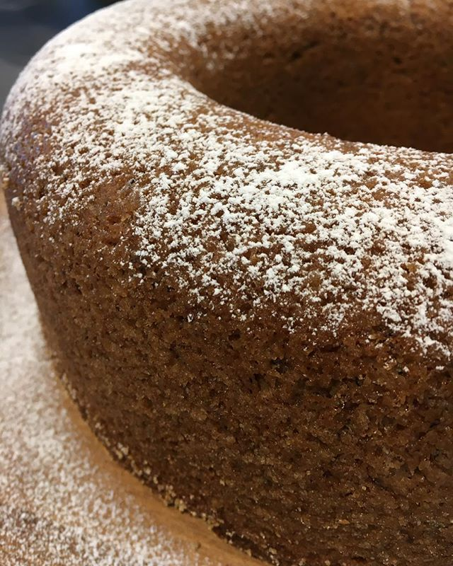

Mängd:
1 kaka
Du behöver:
- 100 gram smör (eller margarin)
- 3 dl socker
- 2 st ägg
- 5 dl vetemjöl
- 1 tsk bakpulver
- 1 tsk bikarbonat
- 1 tsk ingefära
- 2 tsk kanel
- 2 st bananer
- 0,5 dl kallt kaffe
Gör så här:
- Sätt ugnen på 175 grader.
- Smörj och bröa en hålform, ca 1,5 l.
- Rör matfett och sockret poröst. Tillsätt ett ägg i taget.
- Blanda mjöl, bakpulver, bikarbonat, ingefära och kanel. Häll i matfettsblandningen.
- Mosa bananerna, tillsätt dem och kaffet.
- Grädda kakan i nedre delen av ugnen ca 60 minuter. Låt kakan kallna.